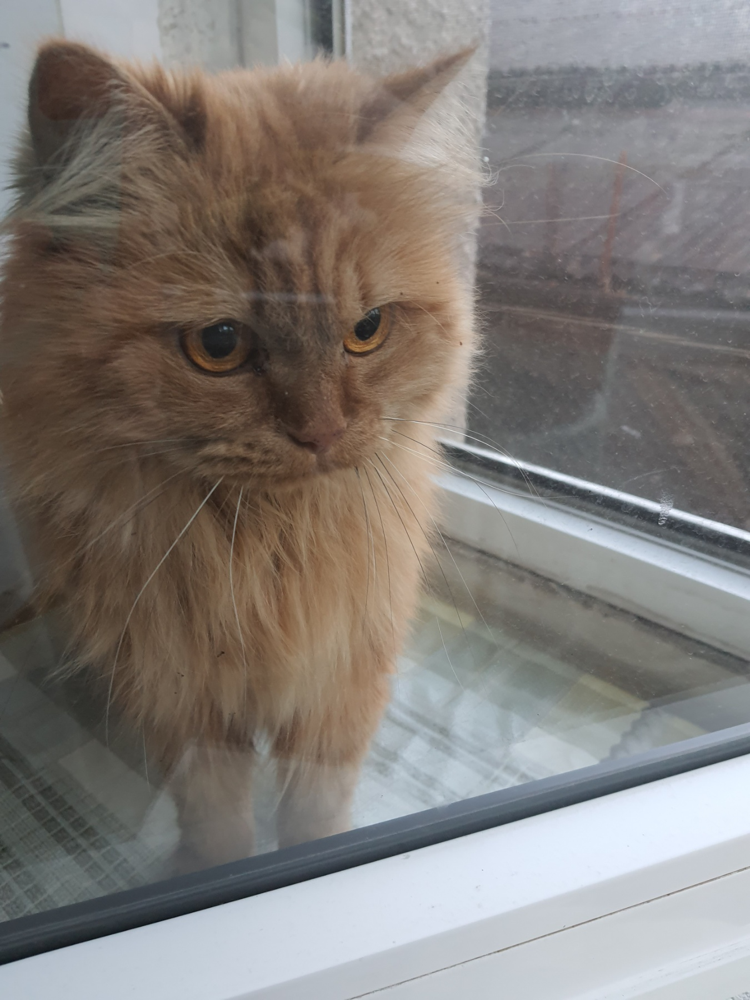
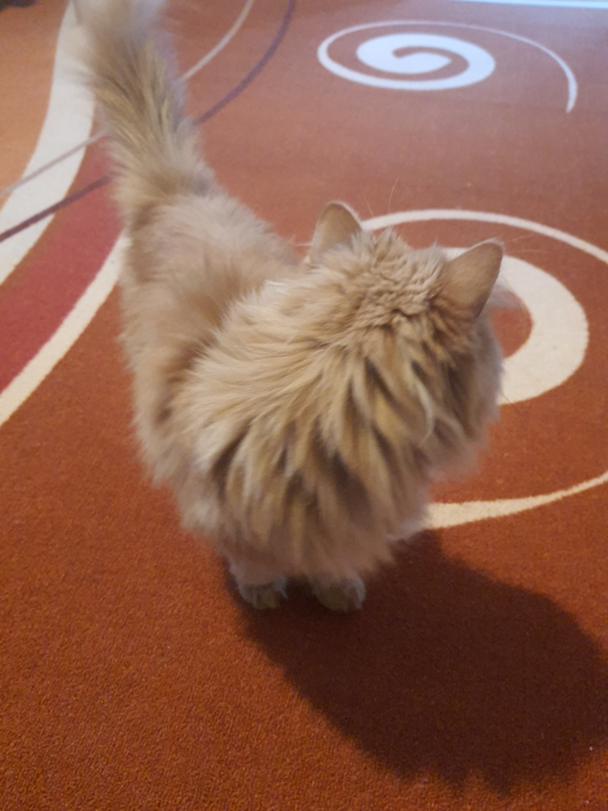
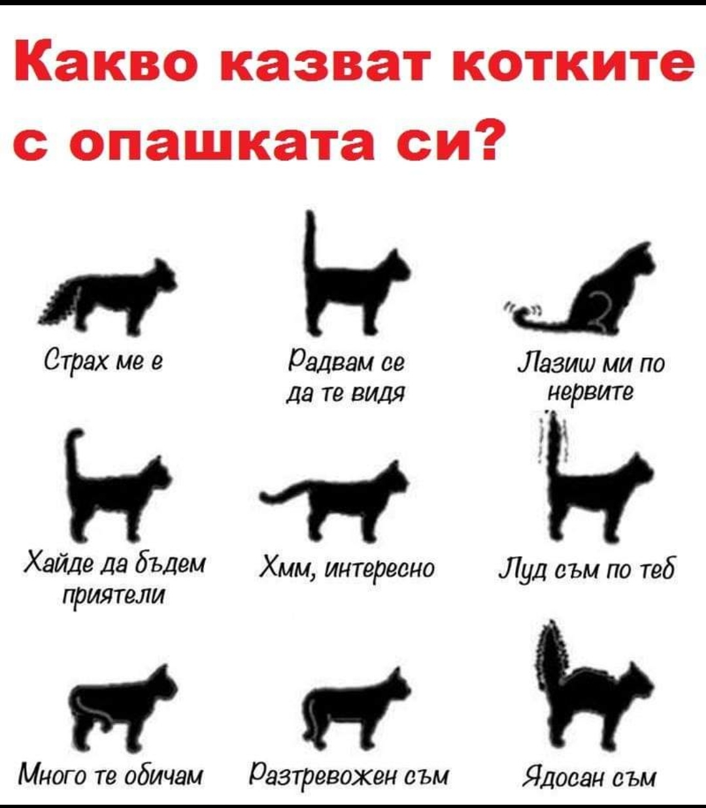
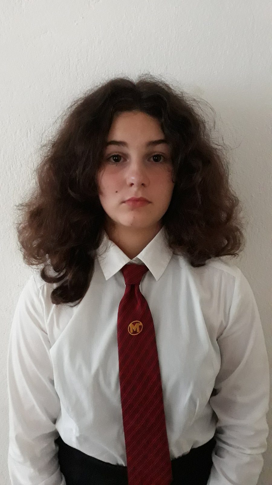
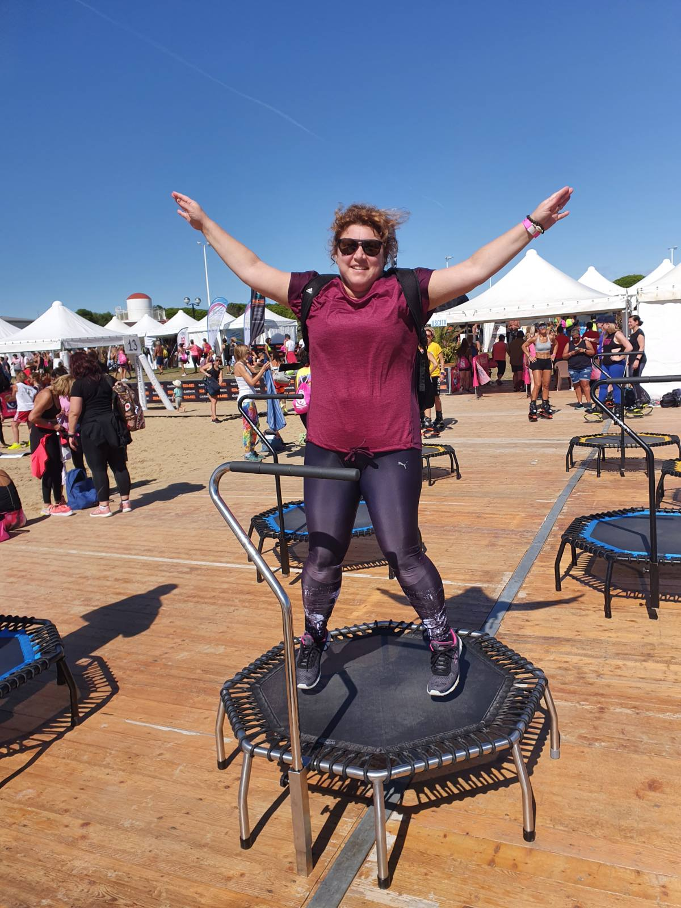
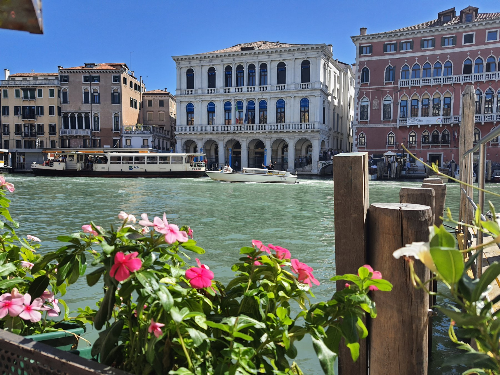

Здравейте, казвам се Вержиния, живея и работя в гр.Пловдив, радвам се на възможността да споделя с Вас повече за себе си:
Имам висше икономическо образование, но подобрявам професионалните си умения в сферата, в която работя - IT услугите с помощта на професионални курсове.
Имам интереси в сферата на програмирането, графичния дизайн, уеб дизайна и особено Front end частта. Също така обичам да чета статии и стратегии за дигитaлен маркетинг.
Старая се да отделям част от свободното си време за спортуване във фитнес зала или групови тренировки по пилатес, тъй като това ми доставя удоволствие и тонус, и се отразява добре на настроението ми. Друго любимо занимание ми са пътешествията.
Имам две деца - тийнейджъри на 14 и 16 години, което поставя доста предизвикателства във връзка с гореспоменатите интереси :). Отглеждаме заедно и още един специален член на семейството ни - нашата котка Белла. Ето и малко снимки:
     От настоящия курс очаквам:
Относно курсовия проект бих искала да е свързан с изработка на landing page за продукт/услуга, която би могла да се използва за реклама, като в нея се включва формуляр за събиране на имейли за рекламен бюлетин.
Записах курса за втори път, защото не се чувствам достатъчно подготвена за следващото ниво, а ученето ми носи удовлетворение и усещане за полезност. Опитах доста варианти за обучение, включително онлайн наживо, онлайн на записи, под формата на лекции за четене в различни платформи на български и английски език и стигнах до извода, че най-полезно за мен е да имам редовен ангажимент присъствено, тъй като така нямам избор да го отложа във времето.
Желая упорство и успех на всички колеги! :)